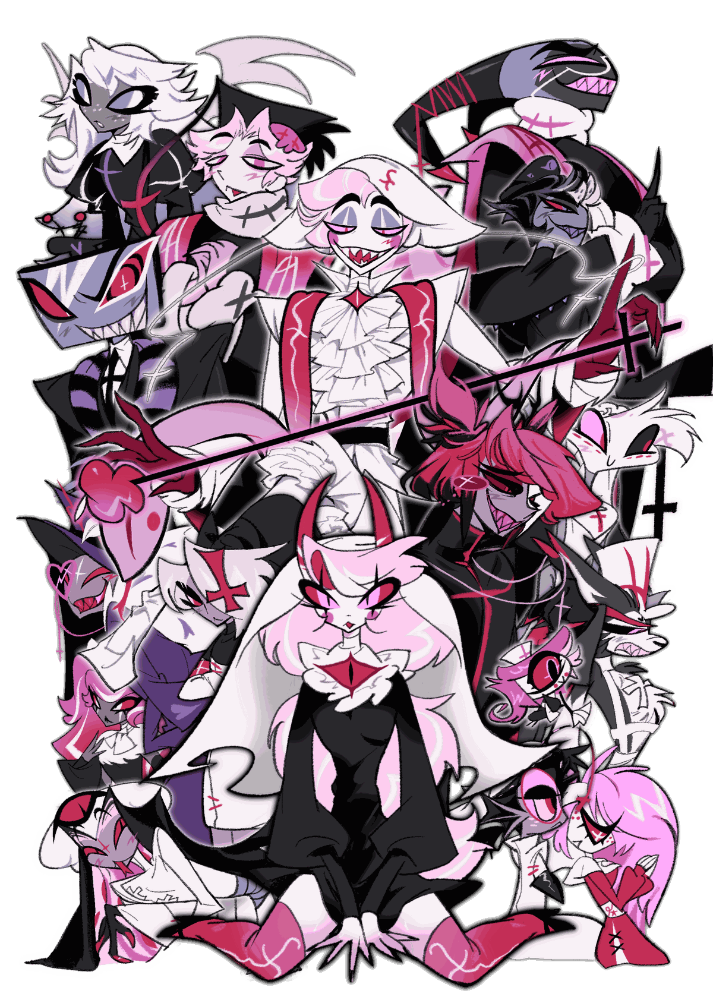

この世界では、天国と地獄の在り方が一般的な概念とは大きく異なっている。あらゆる地域において教会や聖職者が大きな権力を持ち、宗教は政治・経済・軍事にも深く関与している。かつて天国を統治していたLuciferが追放された後、天国は地獄を危険視するようになる。やがて天国は地獄を内部から崩壊させるため、「悪魔化」を利用した政策を推し進めるようになった。一方、地獄では悪魔化によって苦しむ罪人たちを救うため、Charlieが修道院を設立。こうして悪魔化に抗う者たちと、それを利用しようとする者たちの対立が始まった。
In this world, Heaven and Hell operate on a logic far removed from the ordinary. Everywhere, churches and clergy hold immense power, and religion runs deep through politics, economics, and the military alike. After Lucifer — once Heaven's ruler — was cast out, Heaven began to see Hell as a threat. In time, it started pushing policies built around "demonization," aiming to collapse Hell from within. In Hell, meanwhile, Charlie founded a monastery to save the sinners suffering under that same demonization. And so began the conflict between those who resist demonization, and those who mean to exploit it.
悪魔化の危険性を抱えた者たちが共同生活を送りながら、祈りと戒律を学ぶ修道院。創設者であるCharlieは「誰もがやり直せる」という理想を掲げており、更生や浄化を目的とした活動を行っている。修道院では祈祷、奉仕活動、労働、学習などが日課として定められており、入居者はそれぞれ役割を与えられる。共同生活を通して、自身の欲望や弱さと向き合いながら成長することが目的とされている。しかし実際には問題児ばかりが集まっており、理想通りに運営されることは少ない。今日も修道院は騒がしい。
A monastery where those at risk of demonization live communally, learning prayer and discipline together. Its founder, Charlie, holds fast to the ideal that anyone can start over, and runs the place around redemption and purification. Days are structured around prayer, service, labor, and study, with each resident given a role of their own. The goal is growth — facing one's own desires and weaknesses through communal life. In practice, though, the place mostly attracts problem children, so the ideal rarely plays out as intended. The monastery is loud today, same as always.
Luciferが地獄へ追放された後、自らの手で創造した巨大聖堂。その規模は地獄最大級を誇り、豪華絢爛な内装や巨大礼拝堂を備えている。しかし、参拝者はいない。
A vast cathedral Lucifer built with his own hands after his exile to Hell. Among the largest structures in Hell, with lavish interiors and an enormous chapel. It has no worshippers.
天国を統治する最高機関。天国最高指導者である「天教皇」を選出・補佐し、宗教的指導のみならず外交や統治も担う。天教皇は枢機卿会議によって選出される。所属する聖職者たちは黒を基調とした荘厳な祭服を身に纏う。Lucifer追放後は地獄への警戒を強め、悪魔化を利用して地獄を自滅へ導こうとしている。
Heaven's highest governing body. It elects and advises the Celestial Pope, Heaven's supreme leader, and handles not only spiritual guidance but diplomacy and governance as well. The Pope is chosen by a council of cardinals. Its clergy wear austere, black-toned vestments. Since Lucifer's exile, it has grown increasingly wary of Hell, and now uses demonization in hopes of leading Hell to destroy itself.